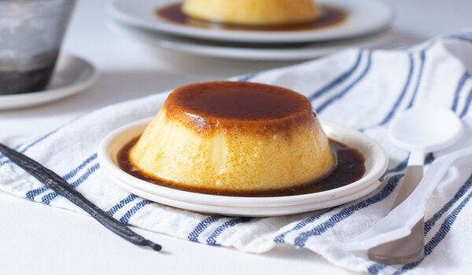

Flan de vainilla
El flan de vainilla es la definición de sencillez y perfección. Con su textura delicada y su inconfundible aroma a vainilla, este postre casero conquista a grandes y pequeños.
Una mezcla de huevos, leche y azúcar se transforma en un manjar irresistible, coronado con un caramelo dorado que le da el toque justo de dulzura.
Recomendación
El postre perfecto despues de una comida de la abuela. ¡Que aproveche! 😋
Ingredientes
- 150 g de azúcar
- 3 cucharadas de agua
- Unas gotas de jugo de limón
- 500 ml de leche entera
- 4 huevos
- 120 g de azúcar
- 1 cucharadita de esencia de vainilla
- Ralladura de limón
Preparación
- Preparar el caramelo:
- En un cazo a fuego medio, colocar el azúcar y el agua. Sin remover, dejar que se derrita y tome un color ámbar dorado.
- Añadir unas gotas de limón para evitar que cristalice y girar el cazo suavemente para repartir el calor.
- Cuando el caramelo esté listo, verterlo rápidamente en el fondo del molde para flan y moverlo para cubrir toda la base. Reservar.
- Preparar la mezcla del flan:
- En un bol, batir los huevos con el azúcar hasta que la mezcla esté espumosa.
- Calentar la leche sin que llegue a hervir y añadir la vainilla y la ralladura de limón.
- Incorporar poco a poco la leche caliente a la mezcla de huevos, batiendo suavemente para evitar que se formen burbujas.
- Horneado al baño María:
- Verter la mezcla en el molde con caramelo.
- Colocar el molde dentro de una bandeja con agua caliente (para el baño María).
- Hornear a 160°C durante 50-60 minutos, hasta que al insertar un palillo salga limpio.
- Reposo y desmoldado:
- Dejar enfriar a temperatura ambiente y luego refrigerar al menos 4 horas (mejor si es toda la noche).
- Pasar un cuchillo por los bordes y desmoldar con cuidado sobre un plato.